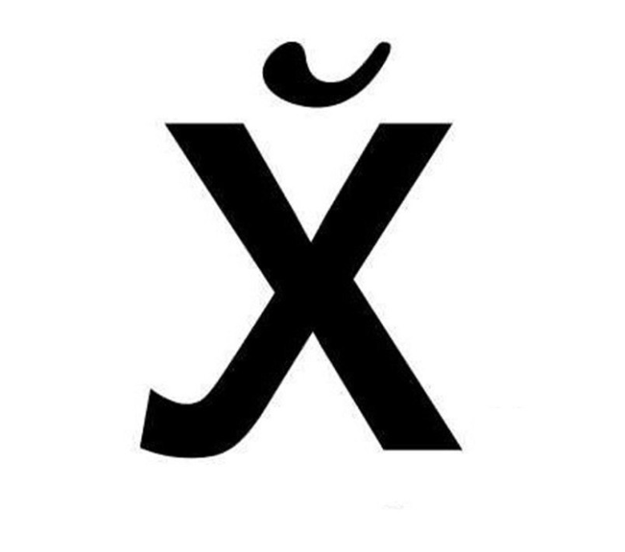

Сяду — не сядуИли чем чревато использование нецензурной лексики в литературе
В современных условиях ненормативная лексика может стать большой проблемой. Все становится намного серьезнее, когда мат выходит за пределы комментариев и личных сообщений в социальных сетях. Что делать, когда ты — писатель? Разберём на примере Владимира Сорокина — русского писателя, сценариста, драматурга и художника.

Начнем с того, для чего же писатели используют обсценную лексику. Для этого есть несколько причин:
1. Образ персонажа
Помимо психологического и визуального портрета, персонажа характеризуют и диалоги. С помощью нецензурной лексики авторы передают эмоции своих героев, делают их образы ближе к реальным. Так у читателей создается ощущение, что этих персонажей они уже где-то встречали.
2. Характеристика эпохи
Большая часть книг с использованием нецензурной лексики была написана в XX-XXI веке. Это можно объяснить тем, что люди стали намного чаще использовать мат. Он стал настолько привычным, что в современной литературе было бы нечестно его обойти. Хочешь точно передать настроение эпохи — расскажи всю правду о ней.
3. Привлекательность
Однажды Дмитрий Быков сказал, что книги с запретной маркировкой “18+” обращают на себя больше внимания. После чего психологи подтвердили факт, что такая пометка на книгах делает их более привлекательными для читателей.
4. Простота
Современные писатели упрощают язык и используют слова, которые нам знакомы. Всё для того, чтобы читатель внимательно следил за книжной историей и лишний раз не отвлекался на поиск сложных определений.
5. Эксцентричность
Нецензурная лексика в литературе звучит дерзко и эксцентрично. Это придаёт герою самобытности, вызывает эмоции у читателя, а ещё делает писателя и его произведение более запоминающимся.
Итак, с причинами мы разобрались. Но какие же проблемы могут возникнуть при использовании обсценной лексики. Для этого мы обратимся к писателю Владимиру Сорокину.
Итак, с причинами мы разобрались. Но какие же проблемы могут возникнуть при использовании обсценной лексики. Для этого мы обратимся к писателю Владимиру Сорокину.
Говоря о нецензурной лексике в современной русской литературе, имя Владимира Сорокина, без сомнения, занимает лидирующие позиции. С самого начала своей литературной карьеры он использовал “непечатную” речь, которая и стала его “визитной карточкой”.
Имя Владимира столь прочно ассоциируется с ненормативностью, что в тех случаях, когда обсценная лексика мало употребляется или вовсе отсутствует в каком-либо из его произведений, это сразу бросается в глаза. Так, в рецензии на “Путь Бро” Александр Вознесенский и Евгений Лесин отметили, что книга почти не содержит обсценной лексики и пришли к “парадоксальному” выводу: оказывается, это — просто роман (!):
“Даже мата в книге практически нет. То есть он есть, но в гомеопатических — не верится, но так оно и есть! — дозах. Просто роман!”
Бывший издатель Сорокина Александр Иванов объяснял “недобор” мата в романе “Путь Бро” возрастающей международной популярностью писателя. Заявляя, что автор стал работать “для рынка” англоязычных стран, Иванов говорил, что Владимир становится «респектабельным русским писателем» (даже несмотря на довольно низкие продажи его книг в России), а это требует от него определённых ограничений
Непременное ожидание от Сорокина “непечатного” слова было публично закреплено скандалом 2002 года. Нецензурная речь и откровенные описания сцен сексуального характера в романе “Голубое сало” стали поводом для судебного иска, поданного в 2002 году молодежным движением “Идущие вместе” и их сторонниками.
Писателю предъявили обвинения в распространении порнографии в соответствии со статьей 242 Уголовного кодекса РФ, которая в худшем случае могла означать для автора лишение свободы сроком на два года.
Скандал вокруг “Голубого сала” представляется ещё более парадоксальным, учитывая прочную связь Сорокина с концептуализмом (литературно-художественное направление в постмодернизме, провозглашающее, что идея, концепция произведения важнее, нежели форма его художественного выражения) и его общее отношение к литературе и художественным текстам.
Сорокин рассматривает слова, как “лишь буквы на бумаге”, защищая, таким образом, использование мата в литературе: “Мат? Это часть русского языка, но не более того. Я, кстати, умею писать и без мата, у меня есть огромный роман “Роман” — там ни одного матерного слова. Мат для меня — это не самоцель. Я работаю не с матом, а с языком».
Наша редакция проделала большую работу, изучая тему использования ненормативной лексики. Мы надеемся, что вы смогли узнать что-то новое, заинтересоваться вопросом. И, конечно, мы ожидаем от вас обратной связи в комментариях.
Писателю предъявили обвинения в распространении порнографии в соответствии со статьей 242 Уголовного кодекса РФ, которая в худшем случае могла означать для автора лишение свободы сроком на два года.
Скандал вокруг “Голубого сала” представляется ещё более парадоксальным, учитывая прочную связь Сорокина с концептуализмом (литературно-художественное направление в постмодернизме, провозглашающее, что идея, концепция произведения важнее, нежели форма его художественного выражения) и его общее отношение к литературе и художественным текстам.
Сорокин рассматривает слова, как “лишь буквы на бумаге”, защищая, таким образом, использование мата в литературе: “Мат? Это часть русского языка, но не более того. Я, кстати, умею писать и без мата, у меня есть огромный роман “Роман” — там ни одного матерного слова. Мат для меня — это не самоцель. Я работаю не с матом, а с языком».
Наша редакция проделала большую работу, изучая тему использования ненормативной лексики. Мы надеемся, что вы смогли узнать что-то новое, заинтересоваться вопросом. И, конечно, мы ожидаем от вас обратной связи в комментариях.
Автор: Ксения Юдакова